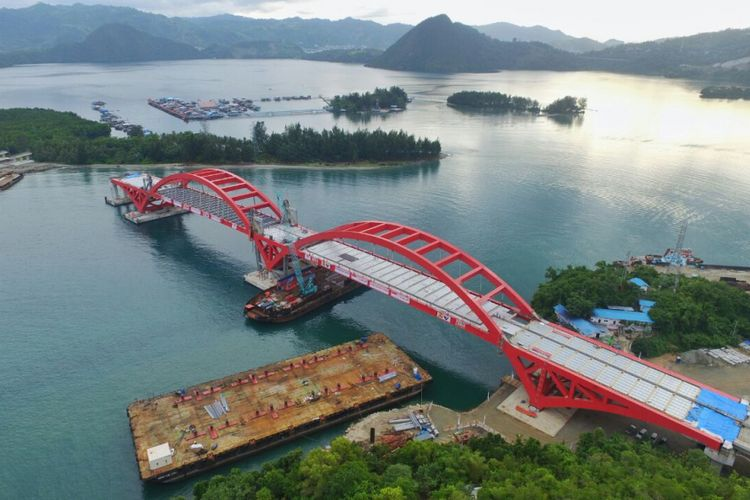
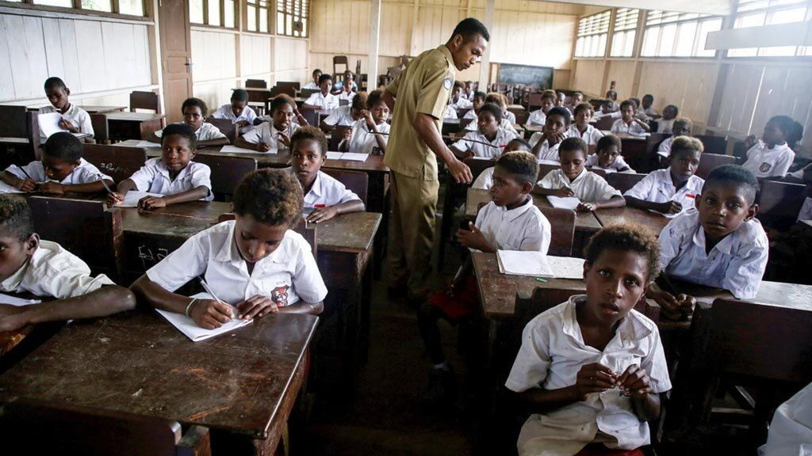

Ikuti perkembangan terbaru dari Pemerintah Provinsi Papua, termasuk pengumuman penting, program, dan inisiatif baru yang sedang dijalankan.
Pengumuman Pembangunan Infrastruktur Baru
Tanggal: 10 Agustus 2024

Pemerintah Provinsi Papua mengumumkan rencana pembangunan infrastruktur baru di beberapa daerah. Proyek ini bertujuan untuk meningkatkan aksesibilitas dan kualitas hidup masyarakat. Detail lebih lanjut akan diumumkan dalam waktu dekat.
Program Pendidikan Baru untuk Anak-anak
Tanggal: 5 Agustus 2024

Pemerintah Provinsi Papua meluncurkan program pendidikan baru yang dirancang untuk meningkatkan kualitas pendidikan anak-anak di seluruh wilayah. Program ini akan mencakup pelatihan bagi guru dan peningkatan fasilitas pendidikan.